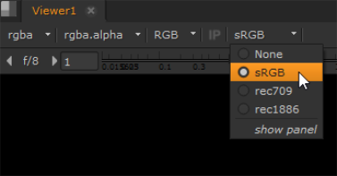
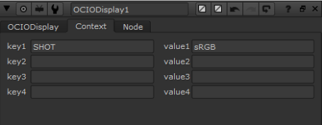

By default, a script’s Viewers display images in Nuke’s native color space. You can, however, set a script’s Viewers to display images in non-native color spaces. Changing the display color space in no way affects your rendered output. You are applying a display-only lookup table.
Select the desired color space from the viewer process dropdown menu.

You can add variables to register certain viewer processes in OCIODisplay nodes by creating a custom config.ocio file and then specifying the variable in the to_reference file transform.
In this example, the variable is called SHOT. If you intend to use the same name, make sure that SHOT is not assigned as an environment variable.
To edit the ocio.config file:
| 1. | Open your ocio.config file in a text editor and review the colorspaces entries. The example shows the sRGB entry. |
- !<ColorSpace>
name: sRGB
family: ""
equalitygroup: ""
bitdepth: 32f
description: |
Standard RGB Display Space
isdata: false
allocation: uniform
allocationvars: [-0.125, 1.125]
to_reference: !<FileTransform> {src: "sRGB.spi1d", interpolation: linear}
| 2. | Edit the to_reference line to include the variable you intend to create. |
to_reference: !<FileTransform> {src: "$SHOT.spi1d", interpolation: linear}
| 3. | Save the file. |
To register the viewer process:
| 1. | Launch Nuke. |
| 2. | Press S over the Node Graph to open the Project Settings, or navigate to Edit > Project Settings. |
| 3. | Switch to the Color tab and use the color management dropdown to select OCIO. |
| 4. | Set OCIO config to custom and enter the file path to your ocio.config file. |
| 5. | Click the viewer process dropdown and select the process you want to register, in this case sRGB (default). |
An error message displays in the Viewer because Nuke can't find the specified reference.
| 6. | Click the viewer process dropdown and select show panel to open the OCIODisplay node properties. |
| 7. | Click the Context tab and enter the key1 and value1 pair as SHOT/sRGB. |

The LUT specified by the variable is applied to the Viewer.
NOTE: Viewer processes are display-only LUTs and do not affect rendered output.
|
|